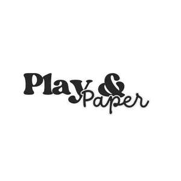

Trade Mark Journal No.2025/013 28 March 2025
UK00004170305 7 March 2025 (16,28)

- Class 16
- Stationery; Envelopes [stationery]; Paper stationery; Printed stationery; Stickers [stationery]; Office stationery; Stencils [stationery]; Wrappers [stationery]; Binders [stationery]; Stationery boxes; Folders [stationery]; Stationery folders; Office paper stationery; Writing stationery; Scented stationery; Adhesives for stationery; Paper folders [stationery]; Pads [stationery]; Thumbtacks [stationery]; Transparencies [stationery]; Party stationery; Pencil ornaments [stationery]; Pencil ornaments (stationery); Files [stationery]; Protractors [for stationery and office use]; Envelopes for stationery use; School supplies [stationery]; Copying paper [stationery]; Seals [stationery]; Covers [stationery]; Stationery and educational supplies; Paper sheets [stationery]; Marking pens [stationery]; Pins [stationery]; Pocket books [stationery]; Announcement cards [stationery]; Clips for paper [stationery]; Manifolds [stationery]; Cases for stationery; Stationery cases; Index cards [stationery]; Glitter pens for stationery purposes; Stationery (Cabinets for -) [office requisites]; Cabinets for stationery [office requisites]; Document holders [stationery]; Glitter for stationery purposes; Adhesives for stationery purposes; Glue pens for stationery purposes; Writing cases [stationery]; Desktop cabinets for stationery [office requisites]; Adhesive pads [stationery]; Self-adhesive tapes for stationery and household purposes; Self-adhesive tapes for stationery or household purposes; Tapes (adhesive -) [stationery]; Adhesives for stationery or household purposes; Felt mats for Chinese calligraphy (stationery); Adhesive foils stationery; Plantable seed paper [stationery]; Marking inks for stationery purposes; Document files [stationery]; Pastes for stationery or household purposes; Organizers for stationery use; Label printing machines for household and stationery use; Self-adhesive tapes for stationery use; Glue for stationery or household purposes; Adhesives for stationery or household use; Adhesives for stationery and household use; Document holders being articles of stationery; Gummed tape [stationery]; Paste for stationery or household purposes; Adhesive tapes for stationery or household purposes; Gummed cloth for stationery purposes; Adhesive tapes for stationery purposes; Rubber bands [stationery]; Pastes and other adhesives for stationery or household purposes; Seaweed glue for stationery; Notepads; Rubber cements for stationery; Gelatine glue for stationery or household purposes; Plastic adhesives for stationery or household purposes; Glue for stationery or household use; Isinglass for stationery or household purposes; Gums [adhesives] for stationery or household purposes; Gluten [glue] for stationery or household purposes; Gum arabic glue for stationery or household purposes; Adhesive bands for stationery purposes; Spirit gum for stationery purposes; Paper embossers [office requisites]; Latex glue for stationery or household purposes; Glitter glue for stationery purposes; Letterhead paper; Notepaper; Letterheads; Adhesive tape for stationery purposes; File pockets for stationery use; Adhesives [glues] for stationery or household purposes; Adhesive tape cutters being stationery; Starch paste for stationery; Paper envelopes for packaging; Adhesive tape dispensers for household or stationery use; Wood pulp board [stationery]; Automatic paper clip dispensing machines for office or stationery use; Printed paper invitations; Reinforced stationery tabs.
- Class 28
- Sports equipment; Sports equipment for pets; Sports games; Tennis uprights [sports equipment]; Sleds [sports articles]; Sleds being sports articles; Sporting articles and equipment; Gloves for sports; Sleighs [sports articles]; Nets for sports; Slingshots [sports articles]; Supporters (Men's athletic -) [sports articles]; Men's athletic supporters [sports articles]; Electronic targets for games and sports; Gymnastic and sporting articles; Balls for sports; Sports balls.
Mohammed Qasim